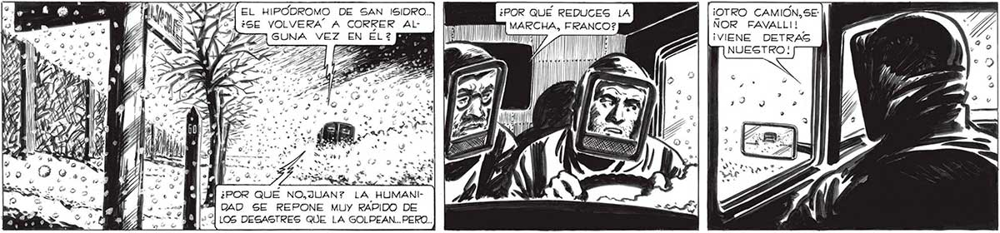
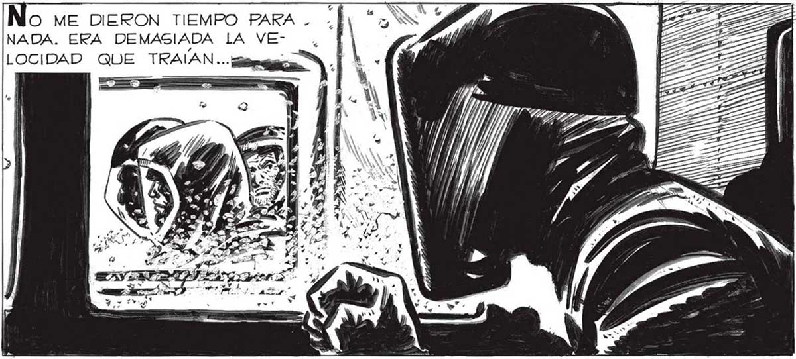
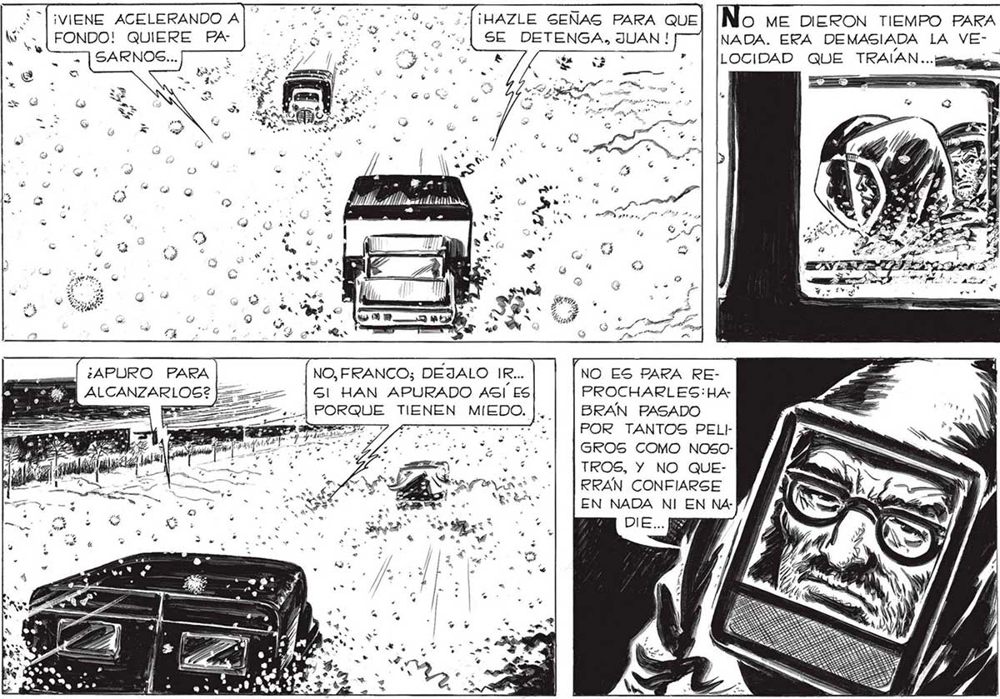

333 EL HIPODROMO DE SAN ISIDRO.. ¿SE VOLVERA” A CORRER Al¡OTRO CAMION, SE: NOR FAVALLI!! ¡VIENE DETRAS . - . “MI ¿POR QUE NO,JUAN? LA HUMANIñ DAD SE REPONE MUY RAPIDO DE | LOS DESASTRES QUE LA GOLPEAN...PERO.. ¡VIENE ACELERANDO A]... 0 0 Df ¡HAZLE SEÑAS PARA QUE O ME DIERON TIEMPO PARA . |; ' FONDO! QUIERE PA- aa AA gs] SE DETENGA, JUAN ! NADA. ERA DEMASIADA LA VE- , Ñ LOCIDAD QUE TRAÍAN.- meza | N E Mill. cda di a EGPEREMOS QUE ALLA, EN LA ZONA DE SEGURTIDAD, ESTA DESCONFIANZA, ESTE RECELO ENTRE LOS SOBREVIVIENTES, HAYA DESAPARECIDO... |] ; ñ NOS ' a > PSN NO, FRANCO; DEJALO IR... NO ES PARA REE ALCA === |Gl HAN APURADO ASÍ ES PROCHARLESG:HA: e - ¿A PORQUE TIENEN MIEDO. |. | |BRAN PASADO PARA | [POR TANTOS PEL! TE nar GROS COMO NOSOTROS, Y NO QUERRAN CONFIARSE EN NADA NI EN NA: DIE... ES e e f en ao, ló . ? G Tan ¿ i dos * bus E] Z só E ds ; 28 mo gas y DoBLAMOS EN LA ESQUINA DEL HIPÓDROMO. y ENFILAMOS POR LA NUEVA AVENIDA. YA ESTABAMOS EN LA RUTA...


